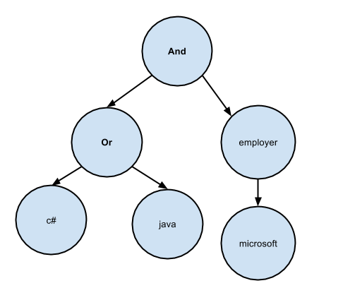

Extração de Informação no StackOverflow Careers
Roberta Arcoverde / @rla4
.Net Architects Days 2014
/whois roberta
- recifense
- cientista da computação, UFPE, 2008
- mestre em informática, PUC-Rio, 2012
- participante do DNA desde 2008
- developer, Radix, 2010-2014
- full-stack web developer, Stack Exchange, 2014
- 1a mulher palestrando no DNAD :O :O :O

- começou em 2008
- 3MM usuários registrados
- 50MM visitantes únicos por mês
- 2000-3000 hits por segundo
- top 50 sites mais acessados do mundo*
tudo isso com apenas 9 servidores
350k usuários registrados (~200k com um perfil/CV)
~3000 vagas ativas/dia
Principal Objetivo
Ajudar empresas diferenciadas a encontrar profissionais também diferenciados
(e vice-versa!)...mas ainda são muitos usuários!
Tag Engine for the rescue!
Perguntas no StackOverflow são associadas a tags
Mesma ideia aplicada ao Careers, mas ao invés de perguntas e respostas, taggeamos CVs!
Nem só de tag vive o candidato
- Como buscar por OSS? E por empregador?
- Mike and also Michael?
- Google and not Google?
- Por que este candidato foi retornado na minha busca?
CV == documento
Elasticsearch
Engine de análise, indexação e busca
Usa Lucene internamente
Restful API, document database (JSON)
Cluster de 3 servidores
"_source": {
"cvId": 195731,
"stackExchangeAnswersTags": [
"c#",
"javascript",
".net"
],
"likeTags": [
"c#",
"programming-languages",
"functional-programming",
"compiler",
"java",
"haskell",
"javascript",
"tdd",
"aspect-oriented",
"asp.net-mvc"
],
"projects": [],
"yearsOfExperienceTags": [
"aop",
"architecture",
"asp.net",
"asp.net-mvc",
"c#",
"html5",
"iis",
"javascript",
"jquery",
"knockout.js",
"msbuild",
"nunit",
"oracle",
"ssrs-reports",
"tdd",
"unit-testing",
"vb.net",
"web-services"
],
"experience": [
{
"experienceJobTitle": "Software Engineer",
"experienceEmployerName": "RADIX Engenharia e Software",
"experienceTags": [
"c#",
"asp.net-mvc",
"iis",
"msbuild",
"ssrs-reports",
"nunit",
"tdd",
"vb.net",
"aop",
"architecture",
"knockout.js",
"jquery",
"javascript",
"html5",
"web-services"
],
"experienceEndYear": 2015,
"experienceResponsibilities": "Working as a software developer, using .NET technologies and trying to become a software crafts[wo]man.
\n\nMost of my work consists of studying how to improve our productivity as web application developers, performing code reviews and helping my peers to write clean and reusable code.
I also make sure everyone in my team is satisfied with what they are doing, and part of that work involves tackling those small projects no one wants to do :-)\n\nI have also helped Radix taking the first steps into the open source culture, creating our GitHub account :-)"
},
{
"experienceJobTitle": "Software Developer",
"experienceEmployerName": "Chemtech - A Siemens Company",
"experienceTags": [
"c#",
"vb.net",
"asp.net",
"asp.net-mvc",
"unit-testing",
"oracle"
],
"experienceEndYear": 2010,
"experienceResponsibilities": "I worked as a software developer, mainly using C# and ASP.NET (both WebForms and MVC)\n,
for creating and maintaining web applications for our customers. Most of these applications were aimed at the media\n
and entertainment industry."
}
],
"education": [
{
"educationInstitution": "Federal University of Pernambuco (UFPE)",
"educationDegreeName": "B.S. Computer Science",
"educationTags": [
"java",
"compiler",
"eclipse-plugin",
"haskell",
"c++",
"c#",
"aspectj"
],
"educationAchievements": "Emphasis on programming languages and software engineering.\nFormer Member of the Software Productivity Group - SPG - http://twiki.cin.ufpe.br/twiki/bin/view/SPG\n\nGPA 8.7/10"
},
{
"educationInstitution": "Pontifícia Universidade Católica do Rio de Janeiro",
"educationDegreeName": "Master of Science (MSc) - Computer Science",
"educationTags": [
"java",
"eclipse-plugin",
"aspectj",
"refactoring",
"haskell",
"code-smell"
],
"educationAchievements": "Member of the OPUS Research Group - http://www.les.inf.puc-rio.br/opus/\n\nI was honored to publish and present papers in a number of conferences worldwide, such as workshops at ICSE 2011 (Hawaii) and 2012 (Switzerland), and a full paper at CSMR 2012 (Hungary). My research was mainly focused on prioritization of refactoring and architecture smells. I presented my dissertation, entitled Prioritization of Code Anomalies Based on Architecture Sensitiveness, on September 2012. It was approved with honors.\n\nGPA 9.2/10"
},
{
"educationDegreeName": "Sun Certified Java Programmer (SCJP)",
"educationTags": [
"java"
]
},
{
"educationDegreeName": "Microsoft Certified Technology Specialist (MCTS)",
"educationTags": [
"web",
"c#",
"vb.net",
"asp.net"
]
}
],
"willWorkIn": [
{
"geoLocation": {
"lat": -22.97673,
"lon": -43.19508
},
"geoCountryCode": "BR",
"isHome": true,
"legalRightToWorkHere": true
}
],
"searchState": "passivelylooking",
"objectives": [
"fulltime"
],
"blocking": [],
"candidateFor": [
{
"positionId": 43283,
"since": "2013-11-17T20:19:18.33",
"state": "saved",
"hasMessage": false,
"candidateId": 343452
}
],
"isStudent": false,
"completeness": 166,
"location": "Rio de Janeiro, Brazil",
"name": "User 328769",
"gravatarHash": "f397a8307caba89af6084bab971d01ec",
"willingToRelocate": false,
"stackOverflowUserName": "rla4",
"topPercentiles": []
}
habemus documentos
term queries vs filters
contexto (snippets)
ranking
mike == michael, ruby on rails == ror...mas nada de busca avançada
CQL
Buscas mais poderosas e flexíveis lembram do Google and not Google?
gmail search
google drive search
trello search
Finalmente, a 'arquitetura'
CQL
- Boolean queries
(c# or java) and not manager - Operadores específicos
education:(Stanford, MIT, Xavier's School for Gifted Yougsters) - Include/exclude
ex:students,remote
Implementação
(c# or java) and employer:microsoftLexer
char-buffering
(c# or java) and employer:microsoftLPAREN Term OR RPAREN AND Operator COLON Term
Parser
top-down, descendente recursivo
LPAREN Term OR RPAREN AND Operator COLON Term
CQL
(c# or java) and employer:microsoft
Term Query
"query":"((c# OR java) AND experienceName:microsoft)"
exclude:student
"must":["term": { "isStudent": { "value": "false" }} ]